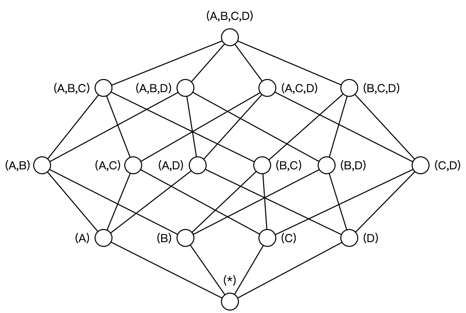

Ch05-Kylin 之 Cube 构建算法
June 19, 2021
Kylin Cube 构建算法
1. 逐层算法 (Layer Cubing) #
在逐层算法中，按维度数逐层减少来计算，每个层级的计算（除了第一层，它是从原始数据聚合而来），是基于它上一层级的结果来计算的。比如，[Group by A, B]的结果，可以基于[Group by A, B, C]的结果，通过去掉C后聚合得来的；这样可以减少重复计算；

以上图为例，实际的构建过程是从上往下构建。
2. 增量构建 (Increment) #
Segment 在增量构建中，将 Cube 划分为多个 Segment，每个 Segment 用起始时间和结束时间标志。Segment 代表一段时间内源数据的预计算结果。一个 Segment 的起始时间等于它之前那个 Segment 的结束时间（前闭后开） 对于每个 Segment 的构建，实际上还是按照逐层算法进行的。